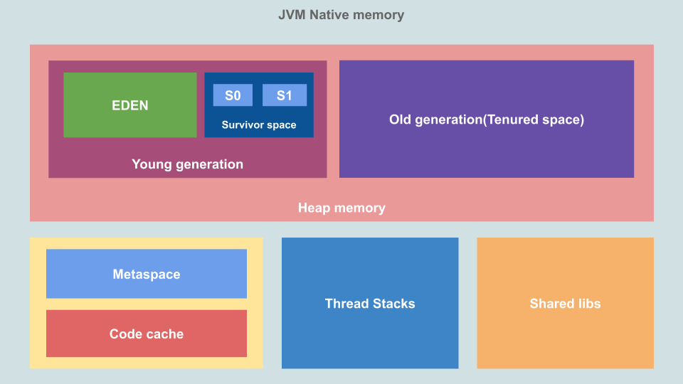

Automatyczne porządki
GC zarządza pamięcią i odzyskuje miejsce po obiektach, których aplikacja już nie używa.
JVM · ORM · JDBC
Pamięć JVM, mapowanie obiektowe i sposoby pracy z danymi.
O mnie
Bartosz Błyszcz
Senior Software DeveloperAlior Bank

Prowadzący Kręgu Harcerstwa Starszego "Źródło"ZHR
 bartosz-blyszcz
bartosz-blyszcz
01 / Podstawy

01 / Podstawy
GC zarządza pamięcią i odzyskuje miejsce po obiektach, których aplikacja już nie używa.
Podczas porządkowania GC może przenieść używane obiekty w inne miejsce pamięci.
Połączenia i strumienie nie są sprzątane przez GC — zamykaj je jawnie.
Na czas niektórych faz GC wszystkie wątki aplikacji zostają wstrzymane.
01 / Podstawy
ORM odwzorowuje tabele i kolumny relacyjnej bazy na obiekty i pola w aplikacji.
Śledzi encje i zarządza ich stanem podczas pracy z bazą danych.
Ułatwia tworzenie, odczyt, aktualizowanie i usuwanie danych przez obiekty.
01 / Podstawy
merge() zwraca śledzoną kopię; oryginał pozostaje detached.
new — utworzenie obiektu bez pobierania go z bazy.find() — pobranie istniejącej encji do kontekstu persystencji.persist() — dodaje encję do kontekstu persystencji.detach(), clear() lub zamknięcie kontekstu — odłącza encję.merge() — zwraca śledzoną kopię; oryginał pozostaje detached.remove() — oznacza encję do usunięcia przy flush/commit.persist() — ponownie włącza usuniętą encję do kontekstu.01 / Podstawy
Zapytania SQL są określane bezpośrednio w aplikacji.
Aplikacja określa, jak wyniki zapytania są mapowane na obiekty.
JdbcTemplate nie śledzi stanu obiektów jak ORM.
JdbcTemplate korzysta ze sterownika JDBC do komunikacji z bazą danych.
02 / Doświadczenie
Porównanie sposobów odczytu danych z użyciem Hibernate i JDBC.
02 / Doświadczenie
02 / Doświadczenie
02 / Doświadczenie
02 / Doświadczenie
02 / Doświadczenie